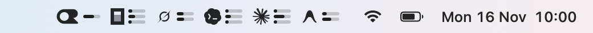
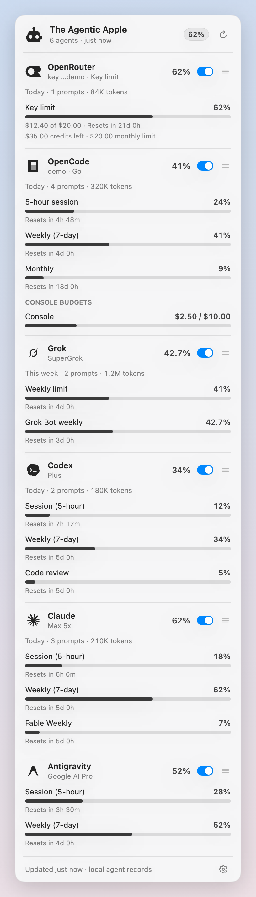

A native menu bar app for macOS
The Agentic Apple
Every AI agent's limits, one glance away in your menu bar.
Illustration with invented numbers. The meters are coloured by each window's own state; the marks never are.
Screenshots


Install
You need macOS 14 Sonoma or later. Download the disk image, or build it from source.
Download
Open the disk image and drag The Agentic Apple onto Applications. On its first launch from there it turns on Launch at Login, so it comes back after every restart; switch that off from its menu or Settings if you prefer.
Build from source
With SwiftPM and the Command Line Tools; Xcode is not required.
git clone https://github.com/crueber/the-agentic-apple.git \
&& cd the-agentic-apple && scripts/install.shThe script builds the app, installs it to ~/Applications, links the agentic-apple command into ~/.local/bin and opens it (which turns on Launch at Login, as above). No Command Line Tools yet?
xcode-select --installFrom version 0.2.0 an installed copy updates itself from the signed GitHub releases; version 0.1.0 has no updater, so install 0.2.0 by hand once. A checkout can also be updated with git pull && scripts/install.sh. To remove the app, its settings and its cache, run scripts/uninstall.sh.
Quietly thorough
Small enough for a notched menu bar. Detailed enough to plan the afternoon around.
-
Five agents
OpenRouter, OpenCode, Grok, Codex and Claude, each with its own monochrome mark and one meter per limit window: session, weekly, monthly, model-scoped allowances and key limits.
-
Automatic detection
Agents you have no plan, key or usage for stay out of the bar. Nothing to configure; install a new agent and it appears on the next refresh.
-
Colour thresholds
A meter turns amber at 70% and red at 90%, or when the provider says you are limited. Both thresholds are adjustable.
-
Drag to reorder
Drag agents in the panel to set the bar's order, and flip a switch to show or hide one. New agents join at the end.
-
Launch at login
One switch in Settings, through macOS's own login items. Refreshes every five minutes, backing off politely when a source fails.
-
Privacy-first
Credentials are read, never refreshed or stored, and the app itself talks only to OpenRouter, Anthropic and GitHub's release pages. How it works
-
Scriptable
The same readings in your terminal, for scripts and status lines:
agentic-apple --textagentic-apple --json -
Signed automatic updates
New releases install themselves from GitHub, but only when the disk image's Ed25519 signature matches a key built into the app and the app inside is a newer version of itself. A failed install rolls back to the old copy. One switch turns background checks off; Check for Updates… is always in the menu.
How it reads each agent
Each agent is read from the source that agent already keeps. No accounts, no proxies, no extra sign-in.
| Agent | Where the numbers come from | Windows |
|---|---|---|
| OpenRouter | Your key from OPENROUTER_API_KEY or OpenCode's credentials; the app asks OpenRouter's /api/v1/key and /api/v1/credits. |
Key limit, credits, previous cycle |
| OpenCode | Asks the installed opencode CLI for its usage limits. |
5-hour, weekly, monthly, Console budgets |
| Grok | Grok's local billing snapshot in ~/.grok, plus Grok Bot's local cache. |
Weekly or monthly, Grok Bot weekly |
| Codex | Asks the installed codex CLI for its plan's rate limits. |
Session, weekly, code review |
| Claude | Claude Code's sign-in, read from the Keychain; the app asks Anthropic's usage endpoint. | Session (5-hour), weekly (7-day), model weekly |
Grok support is ported from the Omarchy plugin and tested against fixtures only.
Privacy
Your keys and tokens are yours. The Agentic Apple looks, and leaves them exactly as it found them.
- Read-only credentials
- Keys and tokens are read, never written, refreshed or cached. When Claude Code's sign-in has expired, the panel says Sign-in expired and suggests
claude auth login, rather than renewing it behind your back. - Three destinations, no telemetry
- The app itself contacts only OpenRouter's key and credits endpoints, Anthropic's usage endpoint, and GitHub to check for and download its own releases. The
opencodeandcodexCLIs it asks talk to their own services, as they always do. No analytics, no accounts; it is MIT-licensed open source, so you can check. - Signed updates
- About two minutes after launch and then every six hours, the app asks GitHub for its latest release. An update is installed only if its disk image carries an Ed25519 signature from a key compiled into the app, and the app inside is a newer version of this same app. The check sends no key, token or identifier. Switch off Install updates automatically to stop background checks; Check for Updates… still works.
- A local cache
- The last readings live in
~/Library/, in a folder only you can read, so the bar paints instantly at login.Caches/ com.crueber. agentic-apple
The Agentic Apple is the macOS port of Agent Meters for Omarchy: same agents, same rules, written natively in Swift.